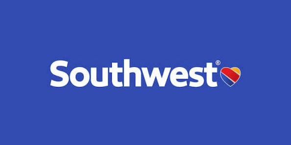
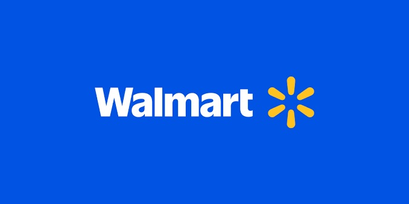
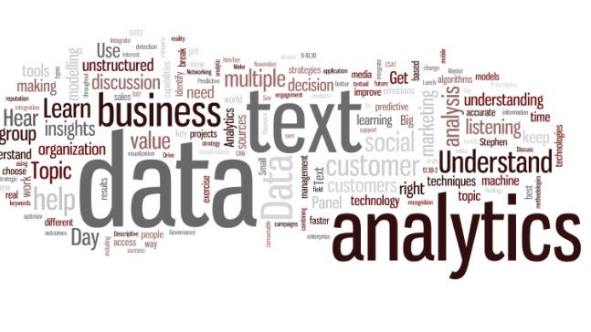

Southwest vs. American Airlines: Competitive Performance
Benchmarked two airlines on a year of U.S. flight data to find where delays really come from.


Benchmarked two airlines on a year of U.S. flight data to find where delays really come from.
A star-schema retail warehouse with ETL pipelines, OLAP cubes, and sales dashboards.
Four model families compared on one shared pipeline and about 70K samples.

A Walmart-sponsored capstone that turns demand forecasts and context into inventory decisions.

An autocomplete model and a word-sense classifier, built from language-model basics.
Data Analyst Intern
Business Analyst Intern
Machine Learning Intern
drag them around
Classification and language models: Logistic Regression, Random Forest, LightGBM, neural networks and Naive Bayes.
Warehousing and reporting with SQL Server, SSIS, SSAS and SSRS, plus dashboards in Tableau and Power BI.
Mapping how systems connect, reconciling data between them, and automating manual workflows with AI-assisted agents.

I like the space between business context and technical work: understanding the question, building the system or model, and explaining the result so people can use it. Based in Chicago.